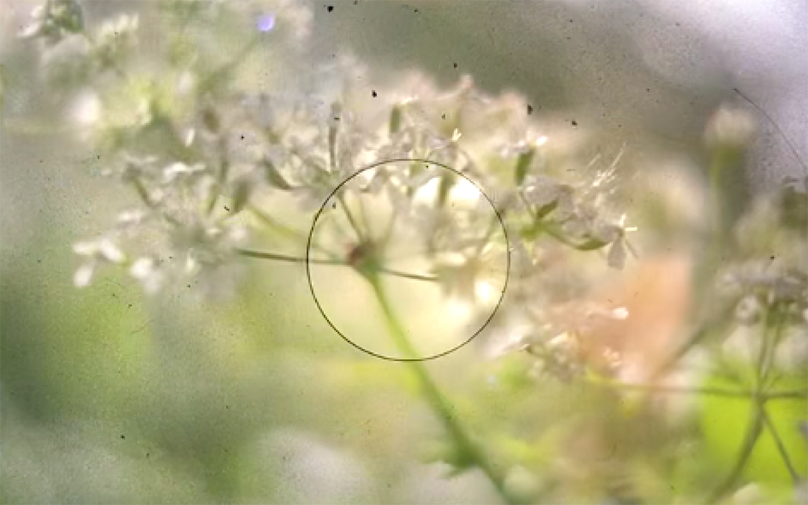
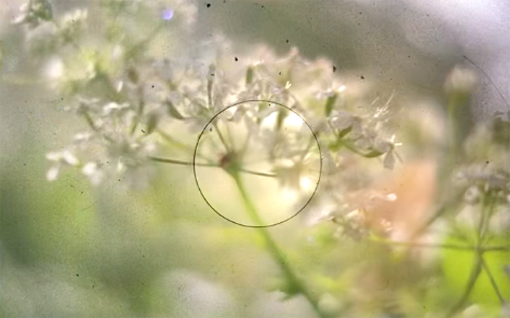

Technology
A key moment early in the definition of my practice came when I picked up analogue photography, not primarily because of an interest in the visual outcomes – though this had an influence of course – but a fascination in the mechanics of a machine that could create an image from light. My first Film camera was a broken Olympus OM-2 that I ordered a couple of new parts for and fixed up (with some help from the trusty internet). I could name more camera models than photographers – though that may have changed now that I have broadened my contextual knowledge. Within this interest, I was obsessed with medium format cameras like the Mamiya RB67 which I managed to get my hands on occasionally when I’d borrow it from a generous art technician at my secondary school.
I started to notice my interest in various technologies after this, especially in my creative work, like, for example, experimenting with Touch Designer, a node-based visual coding language, to create moving image pieces. I realised that I enjoy working with interesting and new (to me) mediums because of the differing processes and possibilities each one holds and how they push my work. I also realised that I was often specifically interested in technology as systems, understanding how it worked and how the components came together and how they could be manipulated to alter outcomes.
Image: Photograph taken by myself through the waist-level viewfinder of the Mamiya RB67.